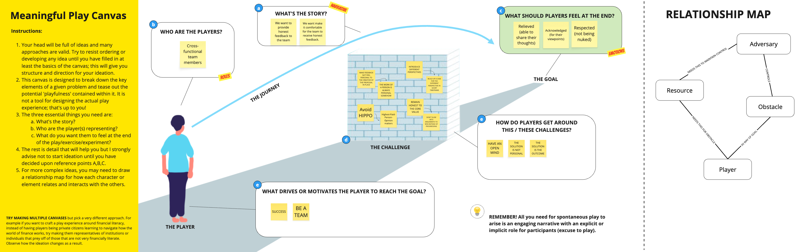
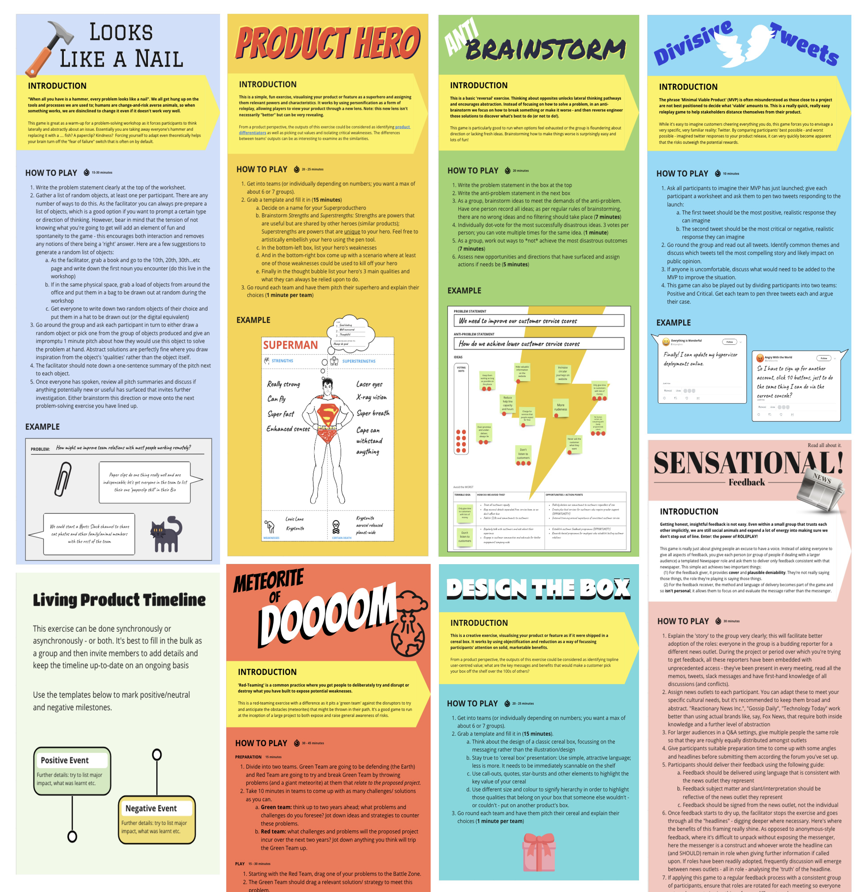
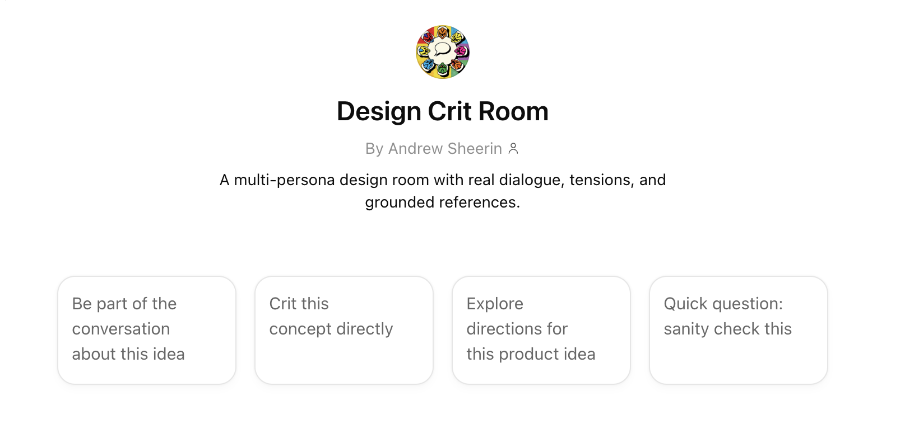
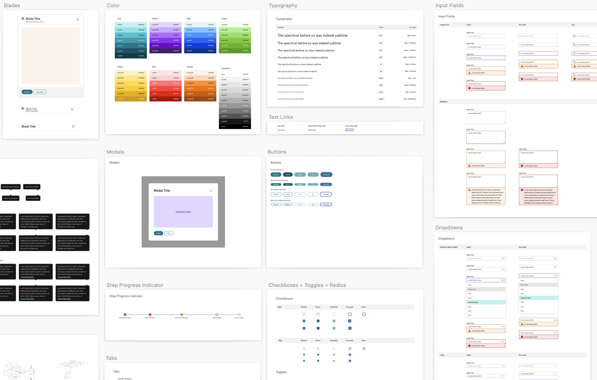
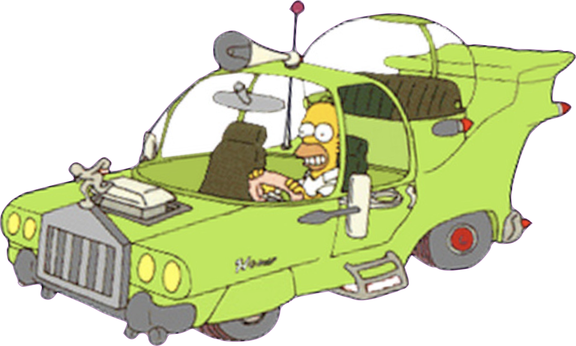
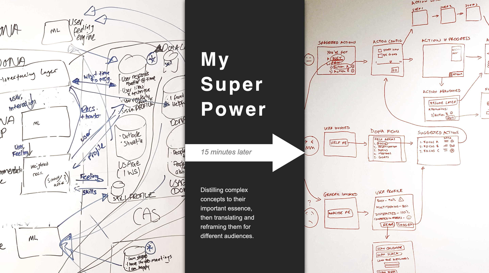

Method
How I Work
Distilling complex concepts to their important essence, then translating and reframing them for different audiences.
This is the capability that runs through every case study - not a separate skill set, but the connective tissue between research, strategy, design, and delivery.
Process
Five pillars
My work moves through these modes - often simultaneously, rarely sequentially. The order matters less than knowing which mode a situation demands.
Theory & research
Understanding before proposing. Primary and secondary research, assumption testing, empathy mapping, and the synthesis that turns observations into actionable insight.
Innovation & strategy
Identifying opportunities others miss. Concept development, lean validation, executive communication, and the translation between behavioural insight and business case.
Feature rollout
Shipping incrementally in complex organisations. Card-based feeds, notification systems, design system contributions - the unglamorous work that keeps products evolving.
Product strategy
Deciding what not to build. Editorial frameworks for AI output, dual-feed architectures, conversion journey mapping - strategy encoded in information architecture.
Design execution
Making ideas tangible. Wireframes, prototypes, design systems, and the craft that earns trust with engineering and stakeholders alike.
Facilitation
Workshops that produce decisions
I design and facilitate workshops for cross-functional teams - not icebreakers and sticky notes, but structured sessions that surface assumptions, build shared understanding, and produce commitments.
Recent examples include a virtual offsite for VMware's RabbitMQ team (November 2023), conversion journey brainstorms, and empathy mapping sessions against sales funnels. The format adapts to the problem; the goal is always clarity and alignment.

Play
Games as thinking tools
Play is not a gimmick in my practice - it's a method. I've designed and collected more than eight workshop games, each targeting a specific cognitive or collaborative failure mode:
- Looks Like A Nail - challenging solution fixation
- Product Hero - prioritisation under constraint
- Anti-Brainstorm - generating better ideas by inverting the process
- Divisive Tweets - surfacing hidden assumptions
- Meteorite of Doooom - stress-testing plans against catastrophe
- Design the Box - forcing clarity of value proposition
- Sensational Feedback - calibrating critique
- Living Product Timeline - making roadmaps tangible
These aren't team-building exercises. They're structured provocations that reveal how people actually think when the stakes are lowered and the rules are clear.

Behavioural science
Understanding why people do what they do
Behavioural insight runs through my work - from DONA's frame-of-mind check-ins to the Rehuman Engagement Model, a framework for designing interactions that respect human attention and motivation rather than exploiting them.
Key principles I apply consistently:
- Don't assert "smart" - be helpful
- Guidance-to-action ratio: know when to guide and when to get out of the way
- Trust shaping: design interactions that build confidence, not dependency
- Context is everything - the same behaviour means different things in different settings
Professional practice
Design ops, critique, and systems
Good design doesn't happen in isolation. I build and contribute to the infrastructure that keeps design connected to product decisions:
- Design crit rooms - structured critique that improves work without destroying confidence
- Design systems - including jUIce, the component library I helped build at Citrix
- Intent-Based Guidance Playbook - a 70-page living document codifying guidance language for admin UX across a globally distributed team
- AI-assisted workflows - using tools like Cursor not to replace thinking, but to accelerate evaluation and documentation (see the Antare feed audit)


Philosophy
Design beliefs
The most powerful tool is useless if it's not clear how to use it.
I believe good design is a language, not a style. I believe the Homer car problem - when design tries to include everything everyone likes - is the default failure mode of undisciplined product teams. And I believe that tools alone don't fix overload; clarity of purpose does.

